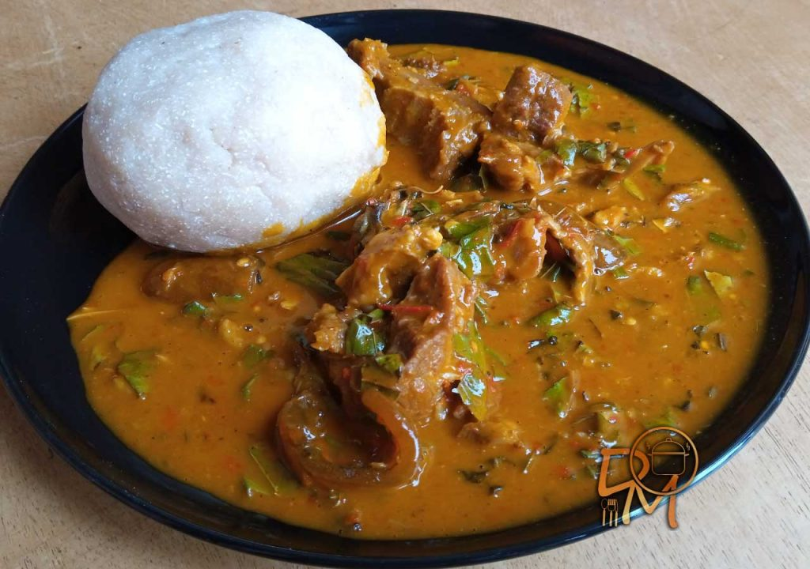

Pupuru And Ogbonna Soup

This is pupuru its just the best food in the world
The food is been consumed by the native of Ilaje
The food gives you enough energy .......Try it out
Ingredents
- Cassava Flour
- Hot Wter
- Turning Stick and Bowl
Steps In Making Pupuru
- Boil The Water
- When the water is fully boiled
- Pour The Cassava Flour i.e Pupuru in the hot water
- Stair with the turning stick